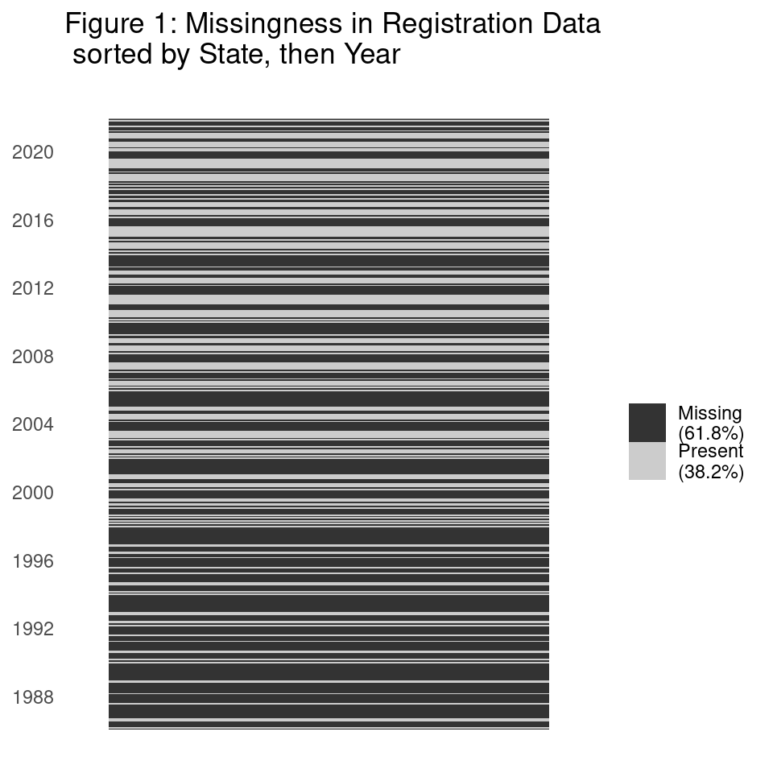

Memo: Swing States Project and Estimating PID
Several decisions regarding methods and data remain to be made for the swing states project. This memo outlines the current state of the project and the decisions that need to be made. The main remaining issue is determining what geographic level we can feasibly use in poststratification to then aggregate to state-level estimates of partisanship.
1 Project Overview
Research question: Why does a state become a swing state, or, why do states swing in presidential elections?
- Intuition that elite polarization is a driver of swinginess
- Are we interested in framing our question in terms of swings being a temporary status or a durable trait of some states, or both?
Level of analysis: the 48 contiguous states (\(i\)) in presidential elections (\(t\)) from 19961 to 2020.
Main Hypotheses (Rough)
- As a given state’s legislative branch becomes more polarized, the state is more likely to swing in presidential elections.
Competing Hypotheses – Partisanship
- As the proportion of a state’s voters identifying as true independents increases, the state is more likely to swing in presidential elections.
- As a state’s two-party make-up shifts towards equal proportions for both parties, the state is more likely to swing in presidential elections.
Causal Drivers:
- elite polarization
- Partisan realignment: migration, birth rates, attitude shifts
2 Estimating Partisan Identification at the State Level
This project requires a robust partisanship covariate at the state level. Samara and Reed have been discussing this problem since the Spring, and have come up with a plan to collect estimates for the proportion of Democrats, Republicans, and Independents in each state for each year of the analysis. Because our hypothesis concerns vote choice, using data that contain measures for partisan leaning independents is a priority (Keith et al. 1986). We have not been able to find this type of partisanship estimate in the existing literature. This section outlines a tentative plan and the available data.
We will estimate our state-level partisanship variable using Multilevel Regression and Poststratification (MRP) within a Bayesian framework Buttice and Highton (2013). To perform MRP, we need two types of data: demographic population data, and polling data. The polling data is used to fit a multinomial logistic model that estimates the individual-level probability of a given respondent identifying as a Democrat, Republican, or Independent. The administrative data is then used to create a poststratification frame, which is essentially a joint distribution of individual-level demographics that are parsed out by geographic unit(s) such as counties or states.2 Each row of this distribution can be thought of as a demographic profile that exists in the population for a given geography. Next, the model trained on polling data is used to predicted the probability of each profile belonging to each of the three parties. The frequencies of the profiles in the geographic level of interest can then be used to predict weighted probabilities of each profile identifying as a Democrat, Republican, or Independent which can then be aggregated to any geographic level present in the polling and demographic data to obtain partisan proportions.
This approach aligns well with our broader project’s goals for a few reasons. Most importantly, the multilevel model allows for information to be pooled across the levels of the variables, which is especially useful when estimating states with small sample sizes. The multilevel model also allows us to make reasonable predictions of partisan identification for geographies that were not sampled in the available polling data for one or more years of interest. This is because in a multilevel framework we compute means at every level of analysis, which allows us to incorporate information about a state’s region and other characteristics in our estimates.3
The above explanation is the standard MRP implementation for estimating state-level opinion for a single year. Because we are interested in generating partisanship estimates for several years, some modifications to the above framework are necessary. Luckily, the longitudinal nature of our question can be used to our advantage when it comes to generating optimal partisanship estimates. If we combine all available polling data across years into a single dataset and estimate the model with varying year intercepts then information will also be shared between years for the given geographies used, which will provide additional robustness to our estimates.
An important obstacle for estimating state-level partisanship is that the available polling data is usually sampled using area clustering, which means that they are likely not representative of the individual state populations being studied. In many recent years, the American National Election Study has used simple random sampling to obtain a portion of its overall sample, which mitigates this issue to an extent. However, it has been proposed that the problem could be further addressed by accounting for the sampling design of area-clustered samples in the predictive model itself (Stollwerk (n.d.)).4 This is achieved by including random effects for the geographic units that were used in area clustered sampling during survey sampling. The resulting partial pooling of information across geographies smaller than the state will improve all of our estimates because it will provide information about a state that would be otherwise missing for any given year by borrowing means generated within that state from other years during prediction. The extent to which this approach can be implemented depends upon the available polling and demographic data.
3 Available Data
3.1 Polling Data
Because our main and perhaps only consistent source of polling data is the ANES data, it would be helpful to bolster the years of the ANES time-series that have smaller smaller samples by combining them with other polls. This section discusses the available polling data and its limitations.
3.2 Existing Estimates
Pacheco (2014) provides poll-based estimates for the proportion of Democrat identifiers out of all partisans (Republicans Democrats, and Independents) for 1978 to 2010. These estimates are primarily based on CBS/NYT polls. They utilize an older and less accurate approach to MRP that does not utilize multiple deep interactions when specifying the multilevel model (called “deep MRP”) (see Goplerud 2023), and they don’t account for the sampling design of the polls (Auslen 2023; Stollwerk n.d.), making them of limited use for our purposes.
3.3 Cooperative Congressional Election Study
- Large sample size and an approximately simple random sample make it very reliable
- MRP provides little improvement over simple mean estimates of state level public opinion (Gelman n.d.)
- only available for 2006 to 2020
- Because sub-state geographies aren’t included, something would need to be done before combining this data with our ANES data where we have sub-state geographies
3.4 Other Sources
The General Social Survey
- excellent temporal coverage for its partisanship variable, going back to 1974
- Doesn’t include state of residence by default
- Doesn’t have a question that parses partisan leaners out of the independent category
- Applying for restricted data access for geocodes may be an option
Nationscape data appears to be very promising for geographic coverage, but it only began being collected in 2016.
Roper Center for Public Opinion Research’s iPoll database of polls.
- Many of these are done by news agencies
- question wordings vary from those in the ANES, and I haven’t come across leaners being parsed out anywhere in this database
- haven’t found any surveys that include sub-state geographies
3.5 Polling Data Summary
Polls are sparse and those that are comparable to the ANES are only available for recent years. This is a concern because it limits our ability to increase within-state geographic diversity and decrease missing data at the state level due to some states not being polled in a given year of ANES data. Because we can’t add additional data for the earlier half of our time-series where we need it the most, the utility of adding additional polls is limited. Another concern is the overall balance of the data. If we add additional polls for later years we risk artificially inflating their sample sizes and weighting all model estimates towards the means for later years.
3.6 Publicly Available Registration Data
One good source of data would be publicly available registration data, however some states don’t report the partisanship of their registered voters, and the data becomes more sparse the further back in time we go. Figure 1 shows the missingness of the registration data by state and year. Each “row” in the graph represents one state in a given year (1988 to 2020). Of course, leaners are not dealt with in this data.
3.6.1 Demographic Data
The availability of census-based demographic data also affects the type of partisanship model we can specify because it determines what geographic breakdowns are possible for poststratification. The table below summarizes the census-based data that is available.
| Source | Demographics | Counties | Census Tract |
|---|---|---|---|
| 1980 Decennial | 1 | 1 | 1 |
| 1990 Decennial | 1 | 1 | 1 |
| 2000 Decennial | 1 | 1 | 1 |
| 2010 Decennial | 0 | 1 | 1 |
| 2020 Decennial | 0 | 1 | 1 |
| 2008 ACS | 1 | 1 | 0 |
| 2012 ACS | 1 | 1 | 1 |
| 2016 ACS | 1 | 1 | 1 |
| 2020 ACS | 1 | 1 | 1 |
One joint distribution of demographics and our chosen sub-national geography is needed for each year of estimates. The demographic variables required to generate joint distributions for poststratifying (age, race, sex, educational attainment) are available in the 1980, 1990, and 2000 but not the 2010 or 2020 decennial censuses. This is likely because the American Community Survey (ACS) replaced the long-form census in 2010. Breakdowns of the needed demographics by geographies smaller than the state are available in all of the decennial censuses, and Google Cloud provides complete breakdowns of these demographics by state, county, and census tract from the ACS. Because of the limitations in the census-based data, it seems best to use decennial censuses for the earlier years and the ACS for the years it is available. For earlier years it will be necessary to interpolate new distributions for the years in between the decennial censuses, as Kastellec et al. (2015) did. Interpolation is also needed for the years between 2000 and 2010, where we would have to use the 2000 decennial census and the 2010 ACS. For years falling between 2010 to 2020 we could use the ACS without interpolation because it is available for every year in that range, or interpolate for the sake of consistency.
4 Preliminary Results
I have spent some time testing different specifications for the predictive model. The results below are on state-level partisanship using MRP, as well as an estimate using a simple disaggregated mean that was poststratified using the same weights as the other estimates (model 1). The models used to generate these predictions were all fit on a single year of survey data (2012) without including effects for any smaller-order geographies, and were then postsratified to the state level. The baseline specification (model 2) has age, sex, race, and education and interactions between sex and race, educational attainment and age, and educational attainment and race as individual-level predictors. It also includes state random intercepts and region fixed effects. Models 3 and 4 add additional state-level predictors. Each model’s specification is summarized in the table below.
| Model | State-level predictors |
|---|---|
| 1 | Disaggregated mean |
| 2 (baseline) | State, Region |
| 3 | State, Region, Republican Vote Share in 2012 |
| 4 | State, Region, Republican Vote Share in 2012, Pct. Black, Pct. Urban, Pct. Christian |
Overall Performance
| model | r | r (conf. low) | r (conf. high) | MAE |
|---|---|---|---|---|
| 1 | 0.9289135 | 0.9024652 | 0.9483844 | 0.0462896 |
| 2 | 0.9432210 | 0.9218804 | 0.9588566 | 0.0438672 |
| 3 | 0.9425482 | 0.9209649 | 0.9583651 | 0.0436026 |
| 4 | 0.9403045 | 0.9176326 | 0.9568762 | 0.0471264 |
By Party
| model | party | r | r (conf. low) | r (conf. high) | MAE |
|---|---|---|---|---|---|
| 1 | dem | 0.7184619 | 0.5457332 | 0.8326247 | 0.0498917 |
| 1 | ind | 0.2020227 | -0.0871124 | 0.4597661 | 0.0345538 |
| 1 | rep | 0.6018159 | 0.3832087 | 0.7565782 | 0.0544234 |
| 2 | dem | 0.7706026 | 0.6228424 | 0.8652800 | 0.0502088 |
| 2 | ind | 0.1410688 | -0.1490398 | 0.4088171 | 0.0351274 |
| 2 | rep | 0.7261827 | 0.5569696 | 0.8375107 | 0.0462654 |
| 3 | dem | 0.7663648 | 0.6164662 | 0.8626556 | 0.0500927 |
| 3 | ind | 0.1870538 | -0.1025302 | 0.4474094 | 0.0342189 |
| 3 | rep | 0.7221757 | 0.5511302 | 0.8349771 | 0.0464962 |
| 4 | dem | 0.7585649 | 0.6026834 | 0.8586812 | 0.0558194 |
| 4 | ind | 0.2336555 | -0.0573601 | 0.4880735 | 0.0375505 |
| 4 | rep | 0.7837808 | 0.6408550 | 0.8741888 | 0.0480092 |

4.1 Results Summary
Initial tests in a single year of data show that adding state-level predictors to the model helps with some aspects of predictive accuracy, especially by decreasing the number of states who’s true values differ by a large amount from the model’s estimates. Unfortunately, many state-level predictors are not available for our entire target time-series, however the results above at least suggest that additional state-level predictors may be useful for improving our estimates.
Another issue is it seems that if predictive power for each party identification among the model covariates is not balanced then the model will be biased towards predicting the category that is most associated with them. Future work in testing model specification will include testing predictors such as social capital, which could have a stronger association with Independents. Work on modeling “deep interactions” among the demographic variables is also needed. This is a key component of the “deep MRP” approach that has been shown to improve predictive accuracy (Goplerud 2023), but it hasn’t been applied to multinomial data.
References
Auslen, Michael. 2023. “Improving Subnational Opinion Estimation from Cluster-Sampled Polls.” Preprint. SocArXiv. https://doi.org/10.31235/osf.io/gmyjh.
Buttice, Matthew K., and Benjamin Highton. 2013. “How Does Multilevel Regression and Poststratification Perform with Conventional National Surveys? | Political Analysis | Cambridge Core.” Political Analysis, no. 21: 449–67.
Gelman, and Andrew, Justin H. Phillips. n.d. Chapter 1 Introduction to Mister P | Multilevel Regression and Poststratification Case Studies. Accessed March 23, 2023.
Goplerud, Max. 2023. “Re-Evaluating Machine Learning for MRP Given the Comparable Performance of (Deep) Hierarchical Models.” American Political Science Review, March, 1–8. https://doi.org/10.1017/S0003055423000035.
Kastellec, Jonathan P., Jeffrey R. Lax, Michael Malecki, and Justin H. Phillips. 2015. “Polarizing the Electoral Connection: Partisan Representation in Supreme Court Confirmation Politics.” The Journal of Politics 77 (3): 787–804. https://doi.org/10.1086/681261.
Keith, B., David B. Magleby, Candice J. Nelson, E. Orr, Mark C. Westlye, and R. Wolfinger. 1986. “The Partisan Affinities of Independent ‘Leaners’.” British Journal of Political Science 16. https://doi.org/10.1017/S0007123400003872.
Pacheco, Julianna. 2011. “Using National Surveys to Measure Dynamic U.S. State Public Opinion: A Guideline for Scholars and an Application.” State Politics & Policy Quarterly 11 (4): 415–39. https://doi.org/10.1177/1532440011419287.
———. 2014. “Measuring and Evaluating Changes in State Opinion Across Eight Issues.” American Politics Research 42 (6): 986–1009. https://doi.org/10.1177/1532673X14524819.
Shor, Boris, and Nolan McCarty. 2022. “Two Decades of Polarization in American State Legislatures.” Journal of Political Institutions and Political Economy 3 (3-4): 343–70.
Stollwerk, Alissa. n.d. Essays on the Measurement of Public Opinion. Accessed February 21, 2023.
Footnotes
The Shor and McCarty (2022) elite polarization data goes back to 1996, setting a lower bound for our time-series.↩︎
We will likely include region, state, and county or census tract predictors in our model, which means that estimates for missing counties can be imputed using state and regional information the same way region can inform estimates for states that were not polled in a given year.↩︎
The weighting process is greatly improved by the inclusion of state-level predictors, such as the state’s region, previous electoral returns, and so on. These are included in the model as fixed effects, and must also be included in the poststratification frames in order for predictions to be possible.↩︎
Stollwerk (n.d.) was not able to implement this approach due to data restrictions, however, even without directly incorporating the sampling design of the polls, they were able to improve their estimates by including random effects for Congressional districts.↩︎